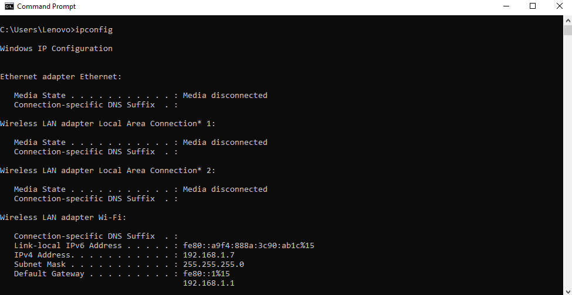
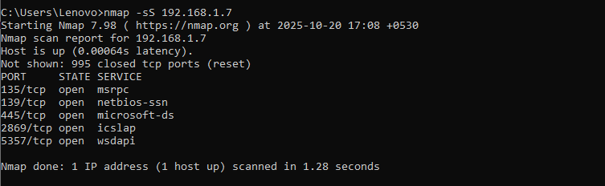

step 1 - Finding ip addres
run ipconfig in command prompt .
Step 2 - Run nmap -sS 192.168.1.7 to perform TCP SYN scan.

Potential risks of open ports - The potential risks of open ports include unauthorized access, exploitation of vulnerabilities, data breaches, and denial-of-service (DoS) attacks. Open ports can be entry points for attackers to gain access to a system or network, steal sensitive information, install malware, or disrupt services. The potential risks of open ports include unauthorized access, exploitation of vulnerabilities, data breaches, and denial-of-service (DoS) attacks. Open ports can be entry points for attackers to gain access to a system or network, steal sensitive information, install malware, or disrupt services.